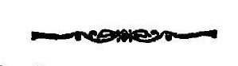

द्वाविंशतितममाह्निकम् ।
अथ
श्री तन्त्रालोके ।
श्रीमन्महामाहेश्वराचार्याभिनवगुप्तविरचिते
श्रीजयरथकृत विवेकाख्यटीकोपेते

द्वाविंशतितममाह्निकम् ।

दुर्वृत्तजनकुसंस्कृतिसंहरणव्यावृतास्यतां दधतम् ।
देवममन्दं वन्दे वन्दनमानन्दनं जगताम् ॥ १ ॥
इदानीं द्वितीयार्धेन लिङ्गोद्धारदीक्षां वक्तुमाह
लिङ्गोद्धाराख्या-
मथ वच्मः शिवशासनैकनिर्दिष्टाम् ॥१॥
एकेति यदुक्तं प्राकू
’अत एवेह शास्त्रेषु शैवेष्वेव निरूप्यते ।
शास्त्रान्तरार्थानाश्वस्तान्प्रति सांस्कारिक विधिः ॥
अतथात्युत्तमं शैवं योऽन्यत्र पतितः स हि ।
इहानुग्राह्य ऊर्ध्वोर्ध्व नेतस्तु पतितः क्वचित् ॥
अत एव हि सर्वज्ञैर्ब्रह्मविष्ण्वादिभिर्निजे ।
न शासने समाम्नातं लिङ्गोद्धारादि किञ्चन ।’ (१३।३५९)
इति ॥ १ ॥